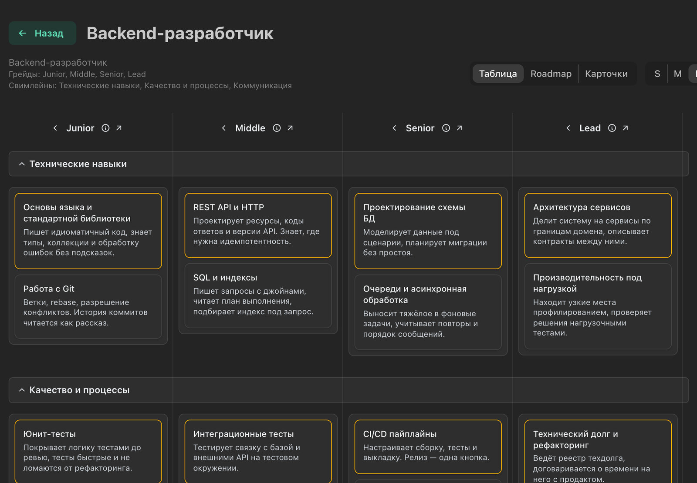

Грейды
Грейды и
карта компетенций
Ступени роста
описаны для каждой роли
Видно, чего не хватает до следующего грейда
Руководитель подтверждает навыки
Один вывод — одной фразой
skillscape.ru

SkillScape
04
 SkillScape04SkillScape04
SkillScape04SkillScape04